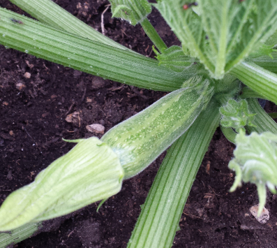
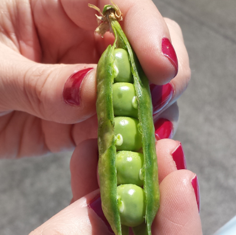

Produzione 2019
Zucchine

Coltivare in terreno ricco di materia organica e non coltivare dopo Solanacee o piante della stessa famiglia delle cucurbitacee.
- Varietà: Zucchina chiara di Faenza
- Periodo di Semina: Marzo / Aprile
- Primo raccolto: Fine Aprile
- Ultimo raccolto: Fine Luglio
-
Raccolto
| Dimensione |
Quantità |
| Piccole (10cm) |
16 |
| Medie (11-16cm) |
26 |
| Grandi(>16cm) |
9 |
| |
51 |
-->Acquista semi<--
Piselli

American Wonder: Varietà media precoce come ciclo colturale.
Consigli
- Piantare in semenzaio riscaldato.
E' importante:
- Acquistare vasetti biodegradabili (di cocco o cartone)
- Mantenere arcato il semenzaio
- Non usare il coperchio del semenzaio
- Non usare mettere il semenzaio vicino al termosifone
- Fissare i sostegni nel terreno non appena le piantine raggiungono i 10cm
- Acquistare una rete con spazi di non più di 10cm per garantire sostegni adeguati
-->Acquista semi<---